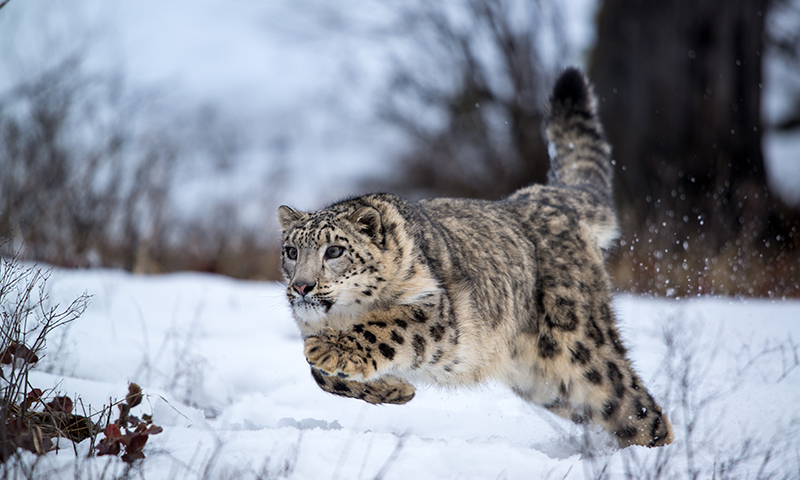
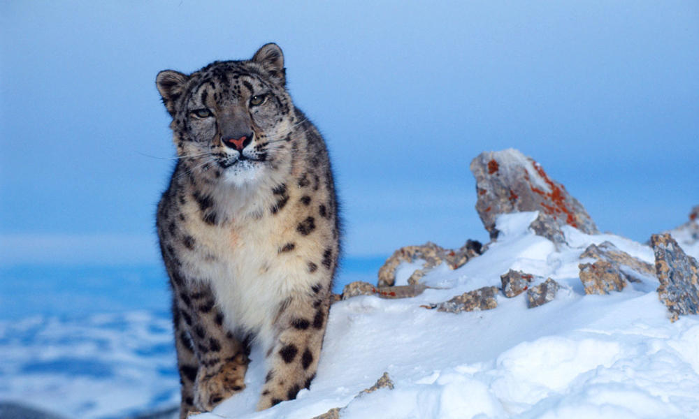
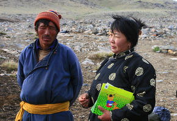
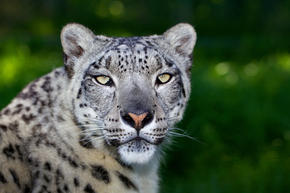

FACTS

Snow leopards have evolved to live in some of the harshest conditions on Earth.
Their white-gray coat spotted with large black rosettes blends in perfectly with
the steep and rocky mountains of Central Asia.
The snow leopard’s powerful build allows it to scale great steep slopes with ease.
Its hind legs give the snow leopard the ability to leap six times the length of its
body. A long tail provides balance and agility and also wraps around the resting snow
leopard as protection from the cold.
For millennia, this magnificent cat was the king of the mountains. The mountains were
rich with their prey such as blue sheep, Argali wild sheep, ibex, marmots, pikas and hares.
Snow leopards are found in 12 countries—including China, Bhutan, Nepal, India, Pakistan,
Afghanistan, Russia, and Mongolia—but their population is dropping.
WHY THEY MATTER

Snow leopards play a key role as both top predator and as an
indicator of the health of their high-altitude habitat. If snow leopards thrive, so will
countless other species.
THREATS
RETALIATORY KILLINGS
Snow leopards are often killed by local farmers because they prey on livestock such as sheep, goats, horses, and yak calves. The animals which snow leopards would typically hunt—such as the Argali sheep—are also hunted by local communities. As their natural prey becomes harder to find, snow leopards are forced to kill livestock for survival.
HABITAT FRAGMENTATION
The snow leopard habitat range continues to decline from human settlement and increased use of grazing space. This development increasingly fragments the historic range of the species.
WHAT WWF IS DOING
WORKING WITH COMMUNITIES
WWF understands there are extraordinary opportunities for conservation to help local people and wildlife live and prosper together. In the Eastern Himalayas, WWF works with local communities to monitor snow leopards and reduce the retaliatory killing of them through innovative local insurance plans.
WWF also works with goat herders in Mongolia to build awareness about the plight of the snow leopard and reduce the killing of snow leopards as retaliation for killing livestock. Through the Land of Snow Project, WWF aims to secure key areas of snow leopard habitat in Mongolia.
STOPPING ILLEGAL TRADE
WWF supports mobile antipoaching activities as a way to curb the hunting of snow leopards and their prey. Together with TRAFFIC, the wildlife trade monitoring network, we work to eliminate the illegal trade of snow leopard fur, bones and other body parts.